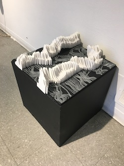
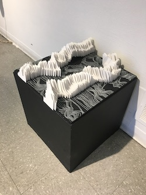

About Me
I am a Computer Science, Mathematics, and Studio Art triple major at the University of Rochester. I have a CS concentration in Human Computer Interaction (HCI).
My hobbies include drawing, painting, bullet-journaling, cooking, and playing volleyball. My ability to think creatively and openly has really helped me with problem solving in both CS and math.
Take a look at my resume, github, or linkedin
Experience
University of Rochester Class of 2021
Bachelor of Arts in Computer Science, Mathematics, and Studio Art
Current Course Schedule
- CSC 252: Computer Organization
- PSC 288: Game Theory
- SA 292: Markings, Methods, and Materials
- SA 111: Introduction to Drawing
Relevant Courses I've Taken
Computer Science
- Data Structure and Algorithms
- Computation and Formal Systems
- Artificial Intelligence
- Web Development
- Human Computer Interaction
Mathematics
- Discrete Mathematics
- Calculus (differential, integral, multidimentional)
- Linear Algebra
- Introduction to Cryptography
- Introduction to Topology
- MTH 201: Introduction to Probability
Studio Art
- Intoduction to Sculpture
- Advanced Sculpture
- Digital Media Toolkit
- SA 151: New Media and Emerging Practice
- SA 209: Writing on Art
Projects
- In Data Structures and Algorithms, I worked on some very cool projects. I created a version of the popular game 2048. This was my first time working with graphics in java and I was pretty proud of my final product. In this class, I also worked on a huffman encoding project which was one of my favorites because the actual application was so evident. It was also really exciting to see everything come together and work as it should. My last project for this course involved using Dijkstras algorithm to find the shortest path between any two points in New York state. Visually, this was the most exciting project.
- In Essential Digital Medial Toolkit, I did a wide array of projects. They can be found Here.
- In Computation and Formal Models I created projects which involved creating DFAs, NFAs, Recursive and table driven parsers for grammars, functional programming, and implementing my own relational data model. This was definitely my favorite course. All coding had to be done in C which we had to teach ourselves so it was very challenging. It was also my first CS theory course so it was quite an adjustment. However, it was the most rewarding course i've taken thus far.
- In Artificial Intelligence, I have implemented a connect four AI that beats me everytime (which is totally awesome)! I struggled through creating an AI for connect four in highschool and my final product was really bad since I didn't use any proper algorithms. But, it was incredible to see such a transformation between my two AIs. I have also implemented a program that can solve any constraint satisfaction problem (CSP). Finally, during the learning unit, I coded a decision tree learning program as well as a Linear and a Perceptron classifier.
- In Web design, I created a wide array of websites. I used what I learned in this course to create this personal website that you're looking at right now!
- In Human Computer Interaction, I had a final group project in which we created a web application using MERN stack for user’s personalized journaling with automated feedback on user’s private journals, along with mood and text analysis. You can check out the working prototype here: Journaly.
Portfolio
Contact Me
Phone: (510) 410-0565
Email: lpressma@u.rochester.edu
Copyright © 2019 Liza Pressman, all rights reserved


 
